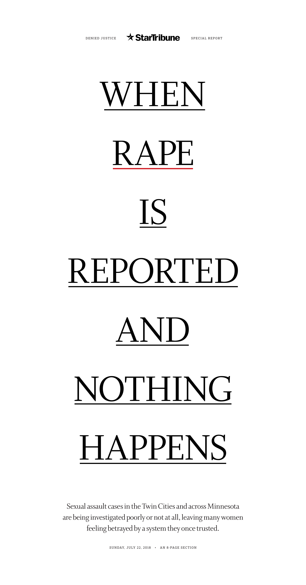

Denied Justice
Investigative Series — Star Tribune, 2018

In 2018, the Star Tribune published "Denied Justice" — a nine-part investigation into how Minnesota law enforcement systematically failed sexual assault survivors. More than 1,000 cases examined. 74% never sent to prosecutors. Rapists left free to assault again.
I was CCO and VP. I'm credited on design alongside Anna Boone and Josh Penrod. But my role wasn't to design it. My role was to guide it, art direct it, and build the process that produced that type of work.
The reporters had the story and the data. The newsroom didn't want to commit the resources — a special section, a dedicated digital presentation, the photography and graphics investment. I made the case for why this investigation deserved the visual treatment. Then I did what I'd been doing for years: someone brings me something, we talk through it, they go try something, we iterate. The typography-only cover, the portrait approach, the restraint — those came out of that process. Renée Jones Schneider's photography gave the survivors dignity the system had denied them. Not all of the decisions were mine. But the process was.
If I could do it differently, I wish I hadn't had to fight so hard to do the obvious right thing. A nine-part investigation into sexual assault deserved the visual commitment from the start. The fact that it took convincing is something I think about.
The series was a Pulitzer Prize finalist and won the SPJ Public Service award. Minnesota changed four laws. But the real proof is what happened next. The process became the template. When George Floyd was murdered in our city, the system we'd built produced the coverage that won the 2021 Pulitzer for Breaking News. I was on the business side by then. I wasn't in the room. I didn't need to be.
That's what I mean by visual editing. It's not about me. It's about the work.